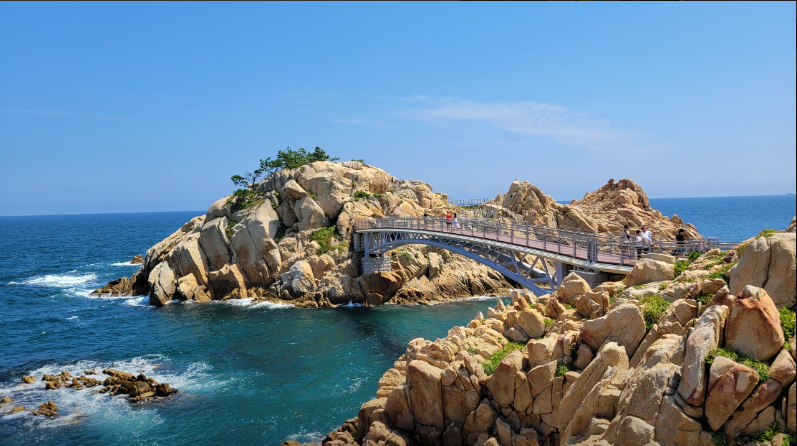

울산대공원
전화번호 : 052-271-8818
주소 : 울산 남구 대공원로 94
이용시간 : 울산대공원 : 05:00 ~ 23:00
동물원, 생태여행관 : 09:30 ~ 18:00 (매주 월 휴무)
파크골프, 키즈파크 : 09:30 ~ 18:00 (매주 월 휴무)
바로가기

대왕암공원 출렁다리
전화번호 : 052-209-3738
주소 : 울산 동구 등대로 140
이용시간 : 09:00 ~ 18:00 (입장마감 17:40)
(휴무 : 매월 둘째 주 화, 명절)
바로가기

울산대교 전망대
전화번호 : 052-209-3345
주소 : 울산 동구 봉수로 155-1
이용시간 : 매일 09:00 ~ 21:00 (휴무 : 둘째, 넷째 월, 설/추석 당일)
바로가기